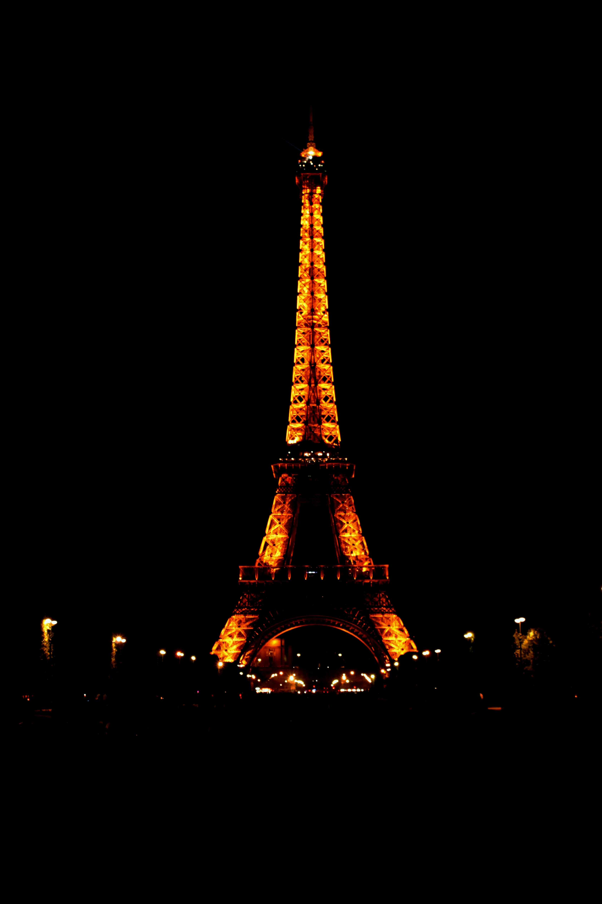
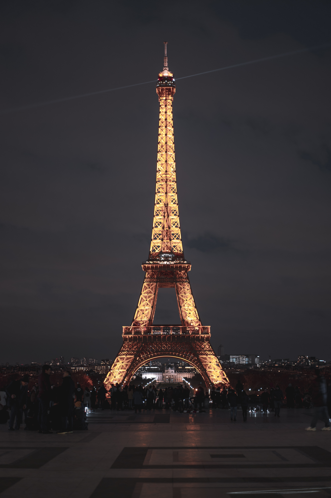
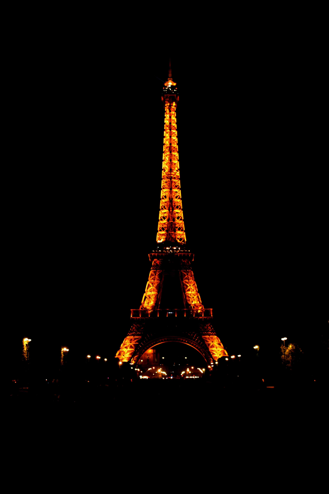
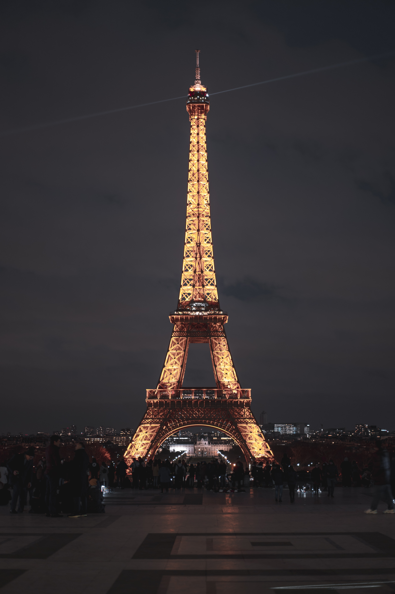
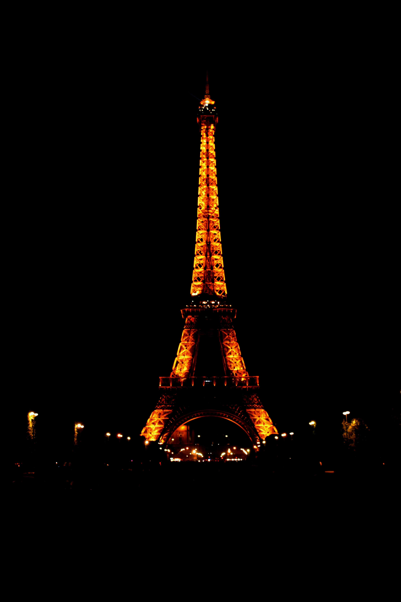
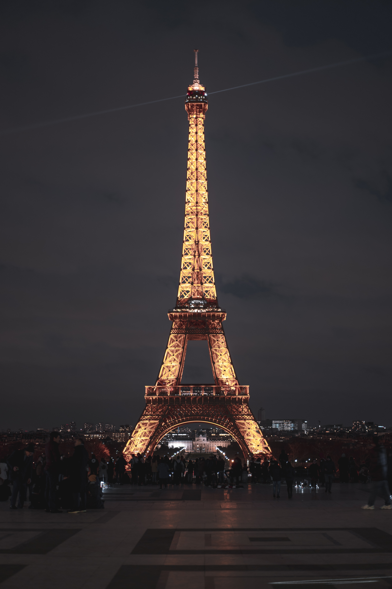

Eiffel Tower
 



The Eiffel Tower was constructed in the year 1889, it is now known as the symbol of the city Paris. The deep history behind this landmark is very interesting. The unique architecture of this famous landmark was different and innovative from the architecture during that time period. According to sources it was so different it wasn’t supposed to remain “ It was a temporary construction that was to stay only twenty years (20) but the revolutionary design changed its fate”. Approximately a whopping 7 million visitors climb the Eiffel Tower every year. Seventy-two (72)names were engraved into the Eiffel Tower of all the participants that helped build the iconic sensation. The tower stands at 330 meters (1,083 feet) and offers breathtaking panoramic views of the city from its observation decks. Visitors can take elevators or climb the tower's 704 steps to the second level, which boasts restaurants, shops, and interactive exhibits about its history. The Eiffel Tower is also beautifully illuminated at night, creating a mesmerizing view. Its location, right by the Seine River where tourists can sail along the rivers banks and sightsee the dasling Eiffel at night and all the other breathtaking sights. The Eiffel Tower is within walking distance of numerous other famous Parisian landmarks, making it a central point for exploring the city's rich history, art, and culture.


The Eiffel Tower was constructed in the year 1889, it is now known as the symbol of the city Paris. The deep history behind this landmark is very interesting. The unique architecture of this famous landmark was different and innovative from the architecture during that time period. According to sources it was so different it wasn’t supposed to remain “ It was a temporary construction that was to stay only twenty years (20) but the revolutionary design changed its fate”. Approximately a whopping 7 million visitors climb the Eiffel Tower every year. Seventy-two (72)names were engraved into the Eiffel Tower of all the participants that helped build the iconic sensation. The tower stands at 330 meters (1,083 feet) and offers breathtaking panoramic views of the city from its observation decks. Visitors can take elevators or climb the tower's 704 steps to the second level, which boasts restaurants, shops, and interactive exhibits about its history. The Eiffel Tower is also beautifully illuminated at night, creating a mesmerizing view. Its location, right by the Seine River where tourists can sail along the rivers banks and sightsee the dasling Eiffel at night and all the other breathtaking sights. The Eiffel Tower is within walking distance of numerous other famous Parisian landmarks, making it a central point for exploring the city's rich history, art, and culture.